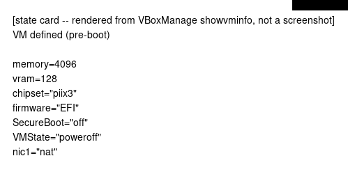
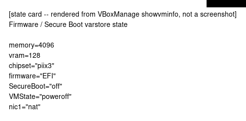
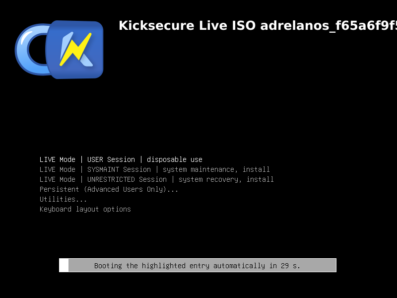
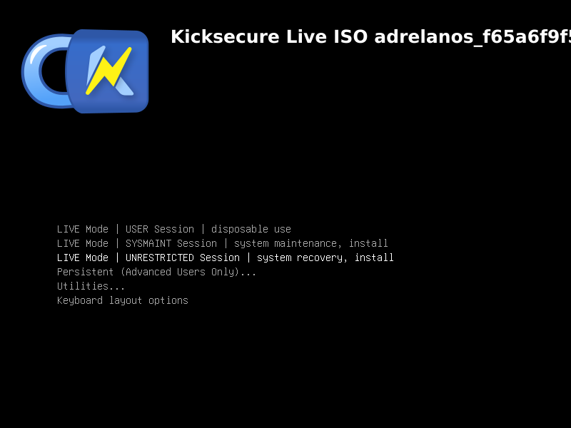
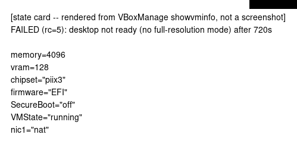
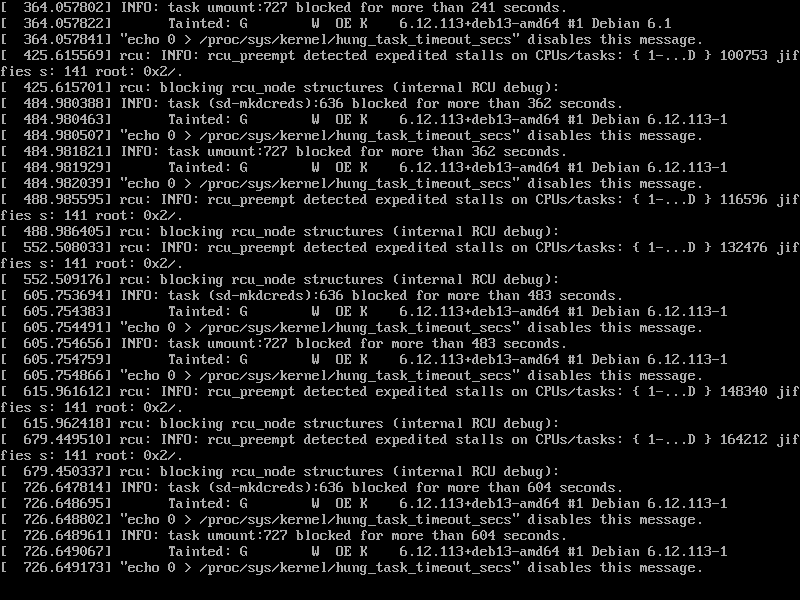

calamares-install fail
exit 5
dm-calamares-install FAILED (rc=5): desktop not ready (no full-resolution mode) after 720s.
fail content: UNVALIDATED (no golden) vm-defined

fail content: UNVALIDATED (no golden) firmware-state (live / pre-install)

fail content: UNVALIDATED (no golden) live-grub-menu (live / pre-install)

fail content: UNVALIDATED (no golden) live-grub-entry-selected (live / pre-install)

fail content: UNVALIDATED (no golden) live-kernel-boot (live / pre-install)
fail content: UNVALIDATED (no golden) failure-vm-state

fail content: UNVALIDATED (no golden) failure
